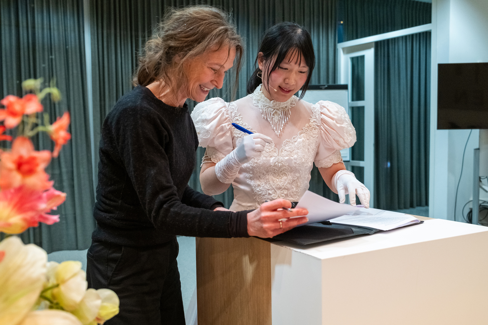
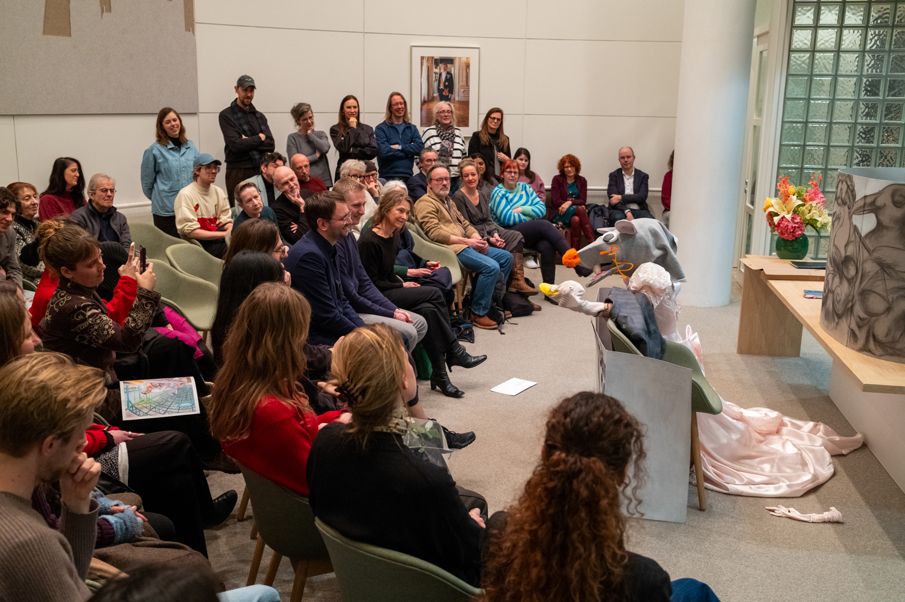
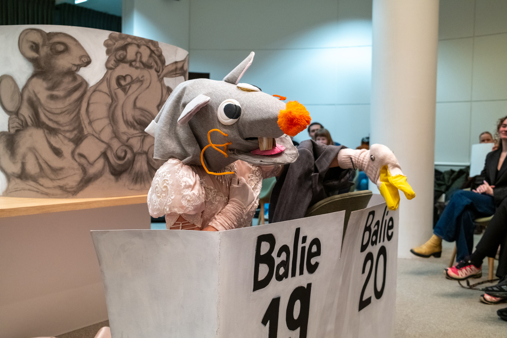
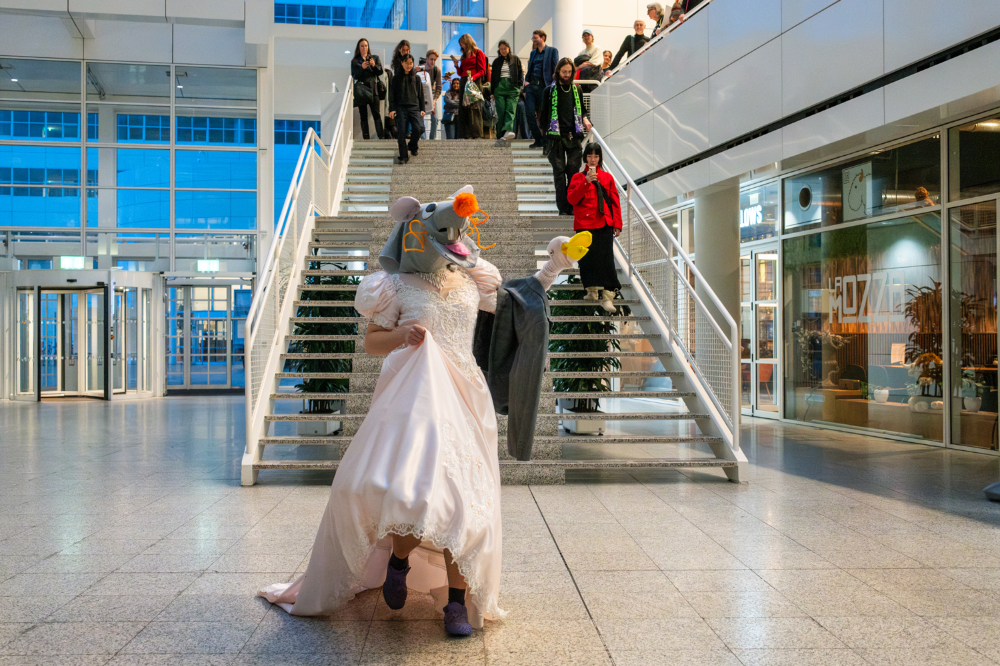
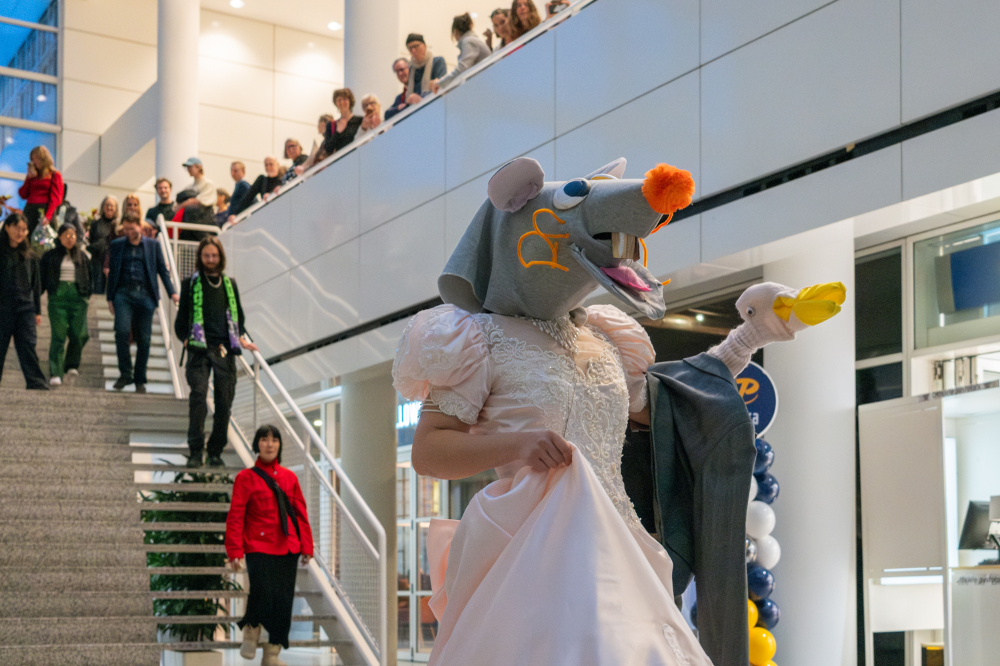
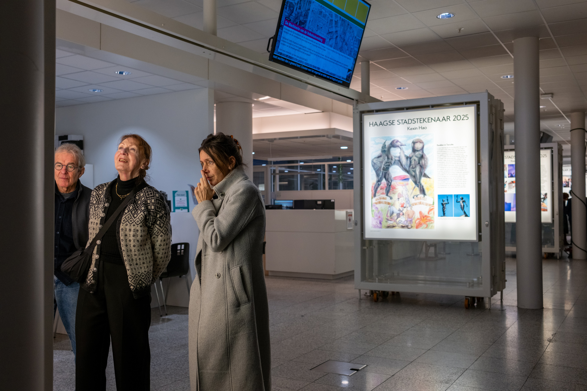

Opening Stadstekenaar Exhibition
The exhibition of Haagse Stadstekenaar opened in the Atrium in The Hague’s city hall. In the lightboxes of the Atrium you can see all drawings I made last year. The exhibtion goes until March 1st.
Following the speeches by Esther Trapman (manager, Haags Gemeentearchief), Robert Baker (wethouder Partij voor de Dieren), and Laurie Cluitmans (directeur, Nest), I opened the exhibition with a special performance where a rat married a seagull. The rat mascot and the seagull sock puppets were made by Laura and me for the children's workshop we gave last year. Because the opening was planned to take place at Trouwzaal, the municipal wedding room in the city hall, I decided to marry the two main characters in my Stadstekenaar project.
The rat and the seagull are getting their BSN and finger print collected at the city hall. They fall in love and sing the song "Put Your Head On My Shoulder", as the seagull (my hand) lands on the rat's (my) shoulder. "Hand in hand", they walk down the stairs with the wedding march.
The background of the puppet stage is my last "stadstekening".
Following the speeches by Esther Trapman (manager, Haags Gemeentearchief), Robert Baker (wethouder Partij voor de Dieren), and Laurie Cluitmans (directeur, Nest), I opened the exhibition with a special performance where a rat married a seagull. The rat mascot and the seagull sock puppets were made by Laura and me for the children's workshop we gave last year. Because the opening was planned to take place at Trouwzaal, the municipal wedding room in the city hall, I decided to marry the two main characters in my Stadstekenaar project.
The rat and the seagull are getting their BSN and finger print collected at the city hall. They fall in love and sing the song "Put Your Head On My Shoulder", as the seagull (my hand) lands on the rat's (my) shoulder. "Hand in hand", they walk down the stairs with the wedding march.
The background of the puppet stage is my last "stadstekening".
photo by
Sungjea Joo





